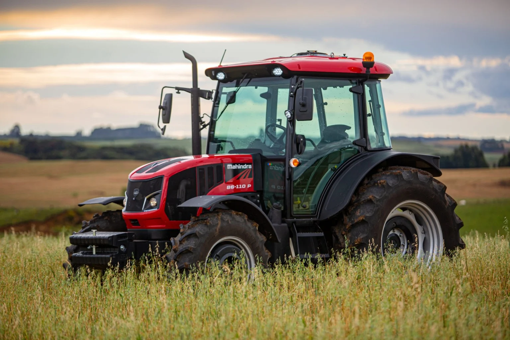
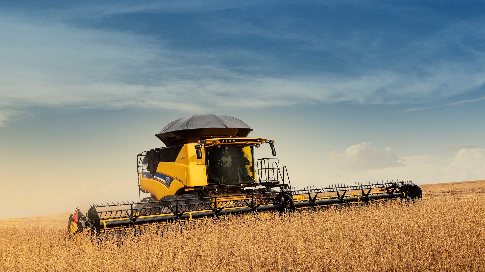
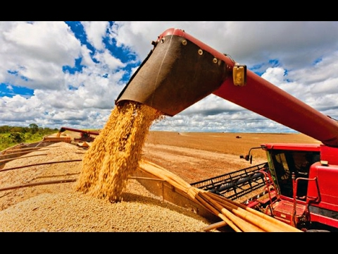

Máquinas

Tratores
Aqui você vai encontrar alguns Tratores

Colheitadeiras
Aqui você vai encontrar algumas colheitadeiras

Carretas e caminhões
Aqui você vai encontrar caminhões e carretas para o transporte de sua colheita